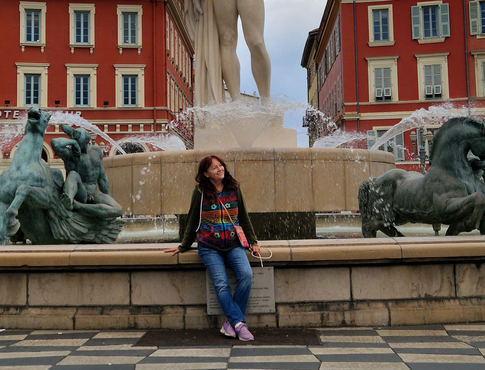
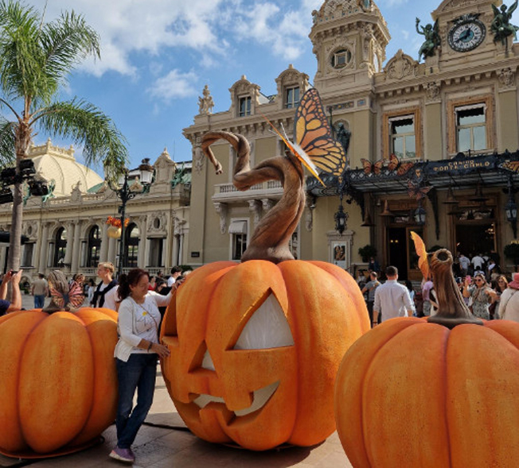
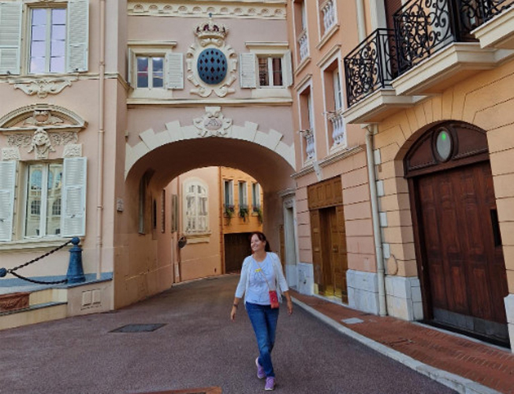
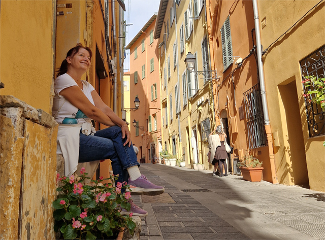
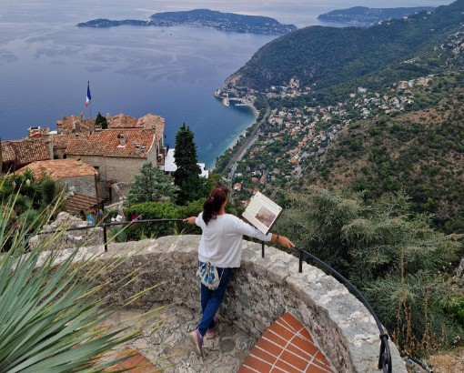

Nica • Monako • Menton • Eze
Azurna obala je jedna od najlepših destinacija u Francuskoj, poznata po Nici, Monaku, Mentonu i Ezeu. U ovom vodiču dobijaš rutu za 4 dana, praktične savete i realne cene sa putovanja.
Kafa u Nici: 3-5€
Ručak: 15-25€
Stan (Airbnb, Booking): 80-150€ noć
Voz između gradova: 5-10€
Koji je najbolji grad za bazu na Azurnoj obali?
Nica je najbolji izbor jer ima dobru povezanost, smeštaj i aerodrom. Od nje se lako ide na dnevne izlete u Monako, Eze i Menton.
Da li se Azurna obala može obići bez auta?
Da. Vozovi i autobusi su odlični i povezuju sve glavne destinacije. Auto nije potreban i često je čak i otežavajući zbog parkinga.
Koliko košta javni prevoz između gradova?
Voz između Nice i Monaka košta oko 5-10€, a lokalni autobusi oko 1.5-2€ po vožnji.
Da li je Monako vredan posete ako nemam budžet za luksuz?
Da. Iako je luksuzan, Monako se može obići besplatno. Šetnja starim gradom, luka i promenada ne koštaju ništa.
Da li je Eze težak za obilazak?
Stari deo Ezea je strm i zahteva uspon, pa su patike obavezne. Napor se isplati zbog pogleda i botaničke bašte.
Koje je najbolje vreme za posetu Azurnoj obali?
April-jun i septembar-oktobar su idealni zbog prijatnog vremena i manje gužve u odnosu na leto.
Da li je Azurna obala pogodna za putovanje sa decom?
Da, gradovi su čisti, sigurni i dobro organizovani, ali treba računati na dosta hodanja.
Koliko dana je dovoljno za Azurnu obalu?
Minimum 3-4 dana za Nica + Monako + Menton + Eze. Idealno je 5-6 dana ako želiš opuštenije tempo.
Ovaj oktobarski vikend počeo je neočekivanim "sightseeing-om" u linijskom taksiju i vozačem koji je kijanje koristio kao melodiju za poruke.
Od nas četvoro (Luka, Kristina, Petar i ja), Petar nas napušta na aerodromu i hita za Pizu na hip-hop takmičenje. U avionu klasična drama sa "kašljucavim" susedima, supa koja je postala moderna i konačno, sletanje maltene u samo more.
Stan sa stilskim nameštajem, terase od kovanog gvožđa i pica sa puno luka - naš prvi susret sa Nicom bio je autentičan.

Više o NiciOd Nice do Monaka vozom (pazite na navigaciju koja voli tunele!). Monako je maksimalno zategnut, bez ijedne pukotine na fasadi.
Obišli smo čuvenu baroknu kockarnicu, Japanski vrt (ulaz je besplatan) koji nas je podsetio na putovanja u Aziju, i dočekali smenu straže kod Kneževske palate. Uber ovde ne radi, ali autobusi su odlična alternativa!

Više o Monte Karlu

Više o MonakuMenton: "Amalfi wanna be" bombona od grada. Sve je u znaku limuna, žutih fasada i fotogeničnih stepenica koje vode pravo u baziliku.
Eze: Srednjovekovno francusko selo na brdu. Botanička bašta sa kaktusima nudi pogled koji vredi svakog koraka uspona, mada nam je Kotor i dalje na prvom mestu po impresivnosti.

Više o Mentonu

Više o EzeuPoslednji dan donosi buvljak u starom gradu Nice, mokre patike i aerodrom koji prokišnjava. Petar se srećno vratio iz Pize (uz malu pomoć sendviča u Đenovi), a mi se vraćamo bogatiji za gomilu slika i novih uspomena.
👉 Detaljan vodič za Azurnu obalu sa rutom, cenama i savetima: Azurna obala putopis i vodič za 4 dana
👉 Moja reportaža o Mentonu i Ezeu na Travel advisoru: Menton i Eze u boji limuna i kamena